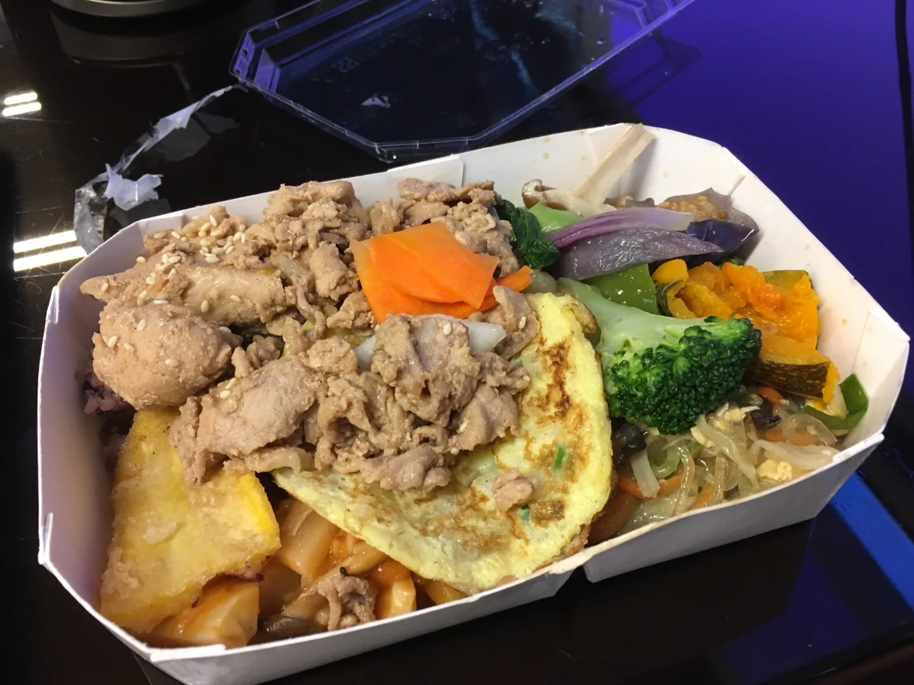
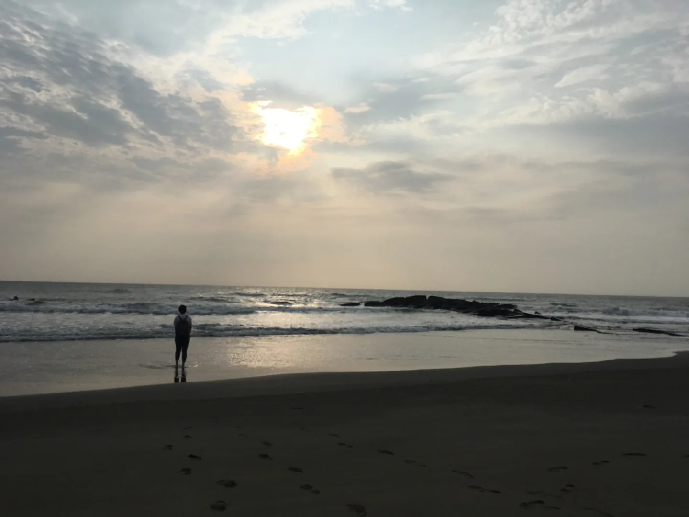

部落格 · 閱讀&生存報告
階段回顧｜2022 Q3 自由工作生存報告，暫時的自由工作
寫在前面：
最初並沒有預期會開始自由工作，一直抱著一定會再找正職工作的心情，居然就要自由工作滿一年了，自己並沒有什麼實感。本來只是一段離職之後的小休息，卻因為各種原因而不斷延後找工作的時間點，這段時間彷彿是「人品驗收時間」，自由之所以能持續，要感謝的莫過於是給我工作的親朋好友們。
即便現在還是打算要找正職工作，但又明白自由工作者的型態是適合自己的，因此記錄這段短暫經驗，供未來的自己參考。書寫參考曼努。
2021 年 11 月底離職，在尚未離職期間，腳踏兩條船地開始接案工作。 11 月～隔年 2 月期間，完成：
- 辦理 1 場線上論壇（2021/12）
- 製作 1 支動畫(motion graphic)（2021/12）
- 製作數支簡單的影片、教材內容編輯（2021/12~2022/02）
- 支援 2 天營隊、 1 天工作坊（2022/01）
- 資料轉移和整理（2022/02）
今年 3 月，去了荷蘭近 3 個月。6月初回國，歸國隔離7+7一結束，才吃一頓飯立刻迎來確診7+7，真的重獲自由已經是7月了。
新生活
頗有重新開啟新生活的感覺。
不僅是因為連續 1 個月的幾乎足不出戶，也因為在國外待了快 3 個月，不諱言還真的有些不習慣。也因為在荷蘭的生活經驗，換了一直覺得不甚舒適的房間擺設，買了立燈、換了黃燈，想要更舒適、更有生活感。
以前讀研究所那段時間幾乎都在咖啡廳度過，因此自行安排生活規律並不陌生，也是在那段日子觀察到自己最佳狀態是一天工作6小時、睡覺8小時，這是我的理想生活。
不請自來的工作（萬分感謝<_O_>）
6 月隔離期間，主要協助前同事A做教材內容編輯和影片（是延續年初的工作），其次是家人參與的NGO希望做行銷曝光，因此在研讀組織資料、相關評估和洽談。
7 月主要在臉書貼文的資料蒐集、主題發想和產出工作中度過。要感謝讓我確診那頓與前同事的聚餐，來自前同事B的邀請，我從過去負責專案管理，到變成專案的外包寫手；另外也開始為NGO產出貼文，不過因為業務涉及與其他國家的合作，也需要額外找資料了解當地，雖然 Google translate 已經很方便，還是無法有上手的感覺，每次都需要做好心理建設（很想逃走）、空出一段完整時間全心處理。此外，還有一小幫工，是某前同事C的公司官網改版，協助上線前的抓蟲。（年初的資料處理其實也是同一件事）
前同事A的教材內容和影片確認完成後， 7 ~ 9 月繼續協助以部落格平台製作主題式網站，將比較生硬的內容簡化與轉化成適合網頁瀏覽的形式，網站在9月底正式上線。
8月時，前同事B捎來新需求，我也首次挑戰了動畫的文字腳本，所幸一切順利。9月還協助了友人辦理的 1 場工作坊，以及去了 2 次學校幫忙做文物普查。

認真列出來後發現，其實也是做了不算少的事情。或許也是因為這樣，年初開始自由工作時，被問到正在幹嘛、我都說耍廢，是這幾個月才終於長出一點自信說「我在接案」了。
對社交與新事物的欲求不滿
生活節奏稍微穩定下來，突然發現社交量需求不高的我，居然開始感到不滿足，或許是有了點餘力和時間，除了和許久不見的友人見面外，也開始做各種嘗試。
- 講座【新創企業不踩雷：你需要知道的勞動法令】 @the Hive Taipei
因為接案、加上旁人有提到或許可以開公司的事，所以跑去聽這個講座（而且只要100元）。分享了很多基礎但重要的法令知識，不過對我來說有點過於基礎，可惜XD - 論壇【2022 轉型領袖私塾會｜永續轉型商務論壇】 @三創
主要是對永續轉型感興趣跑去聽，可能是因為我待過的組織不夠大，或是性質不同(?)，這些對我來說是很陌生的內容，也因此覺得很新鮮！應該算得上有收穫，但也可以說是因為我對經濟局勢、永續議題的認識太缺乏了。 - 體驗跑酷 @ADD 跑酷學院
妄想透過跑酷來增加抱石時面對動態的恐懼，所以跑去體驗。結論是雖然覺得不錯玩，但覺得會受傷的恐懼超過了樂趣……
學生幾乎都是小孩（國小高年級～國中左右？），老師是個外國人、講英文為主，特技表演跟跳舞出身的。我基本上亂入了一個連續課程的其中一堂，除了一開始的暖身之外，因為程度不一所以老師得分開指導。 - 展覽【挑戰—安藤忠雄展】@松菸
友人邀請。對於展出的內容喜好參半，主要是後期一些大型商案應該是業主有些需求或考量，驚喜度就比較低，他個人的作品真的很棒。
也再次確認，比起公共空間，發現自己比較偏好住宅的建築設計。 - 電影【孩子(L'Enfant)】@象山日光珈琲
那時候看了一個youtuber提到「看電影要找人一起」，這樣才能一起討論，所以我嘗試在臉書尋找有在辦電影會的咖啡廳，只找到這家咖啡廳固定辦影展。整體來說，選片都滿經典的，可惜的是觀影空間狹小、離投影幕過近，體驗不是太好。
為了踏出舒適圈、給自己個驚喜，沒有特別挑選過要看哪一部電影，這部電影不差，只是不是我的菜（當初看完應該記錄點什麼的…懊悔……） - 講座【台灣漫畫市場的混亂與萌生】@臺北市立圖書館
友人邀請，許久沒見面順便約個講座一起聽。內容偏硬，沿著年代一路介紹，了解到過去的漫畫家經歷了什麼（所以造就了現在），曾經有過怎樣的政治環境、政策、規範和審查等等（而它們是如何規避），以及盜版是如何產生和製造的，非常有趣和開眼界！ - Blue Dance 體驗 @癒境Healer
來自臉書活動的隨意搜尋，感謝「國民體育日」有免費體驗可以參加。大學時有修過社交舞的體育課，雖然不認識Blue Dance，但事先搜尋大概可以想像，體驗過後也滿喜歡的，主要是這種舞的氛圍吧，很能想像喝一點小酒、跳一點舞的chill情境。（也僅止於想像，以前好像沒去過那種場合） - 一日咖啡店店員
這絕對是神奇的事件。固定去看的中醫開了一家咖啡廳（副業？），問我要不要去玩，我就答應了。一大早會合，搭他的車前往車程 40 分鐘的地方，因為店剛開幕，來的都是常客或外帶的過路客，客人不算多，基本上就是打雜、試做飲料，準備甜點原料等等，最後還幫忙挑了咖啡豆的瑕疵豆，看別人小量烘豆。
其他
抱石：每週維持2-3次，持續至今。
寫文章：每月寫一篇文章，達標！
英文：有感於覺得自己的單字量不足，導致口說很差，經過一番簡單評估之後訂閱了App、搭配免費資源，目前覺得還算順利，有機會再來記錄。
鋼琴：用空檔久違地練琴，主攻流行歌，遠程目標是可以學習爵士即興。不過持續到8月底因為其他事務停滯了。
Python：像在復健一樣，重新學那些我大學學過的基礎概念，學習進度極度緩慢地推進。雖然如此，很幸運地在ptt找到了可以一起學習、問問題的群組，對於初學者來說，可以沒有壓力地問問題我覺得很重要。
新工作－講師：巧遇前同事 D 而被詢問了有沒有興趣到國小講課，雖然是熟悉的議題但我從來沒有做過類似工作，而決定接下這個工作的主要原因，是自己曾經在探索職涯時寫下「講師」，希望能夠趁此機會挑戰看看。所幸 10 月上課時一切順利！
旅行：久違的國內旅行，和許久不見的友人去了一趟台南兩天一夜。住在日式老屋改造的民宿、喝著金釀啤酒聽著呱吉的podcast、騎車去海邊看夕陽，沒特別安排行程，就是隨意走走，自由自在地想去哪就去哪。

這段時間每週實際工作時間約20-30小時，老實說工作效率並不好，自己有點容易分心摸魚，暫時是以「拉長待在咖啡廳的時間」來應對。這樣的工時，當然多了很多時間可以做自己的事情，但因為自己的懶惰浪費了許多時間，有點可惜。
收入的部分，過活是沒有問題的，但存不了什麼錢也是真的，不過和前一份正職工作相比，除了免去了一直加班的情況，也少了很多的情緒勞動，所有事都順利很多。趁此好好檢視自己，又有收入生活，已經太過美好了。